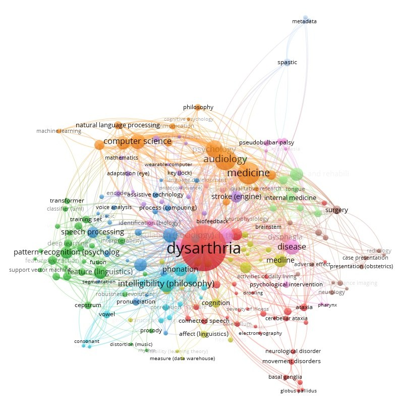
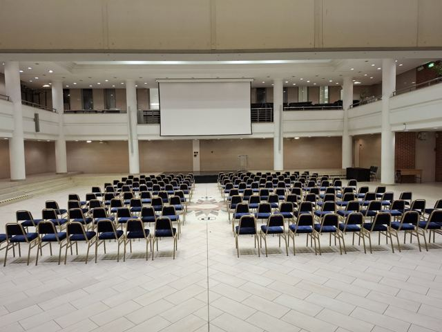
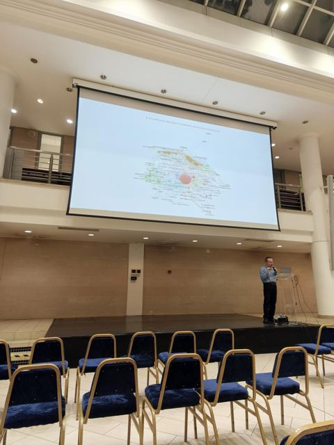
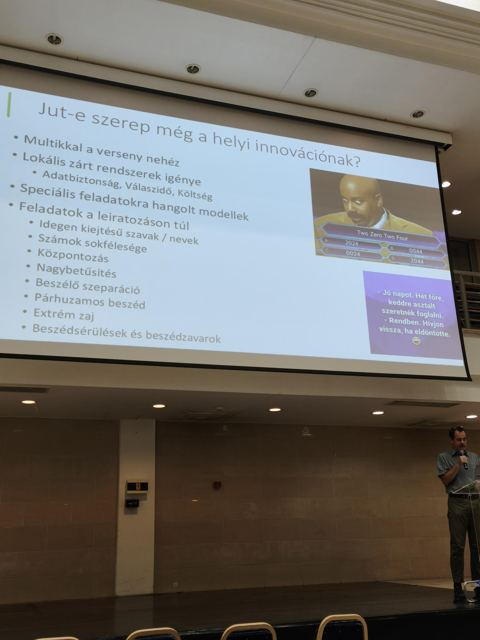
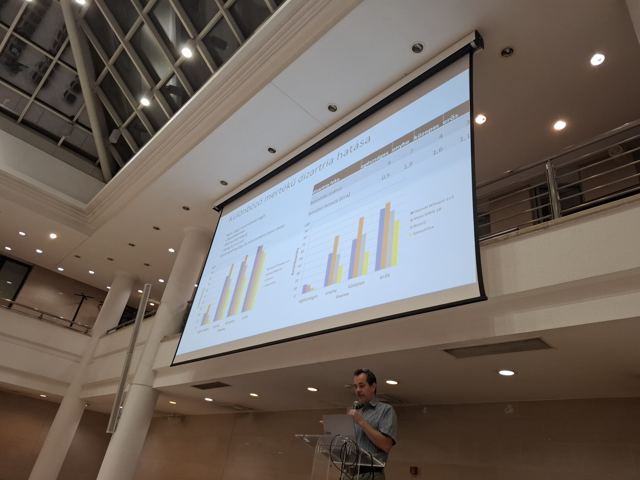
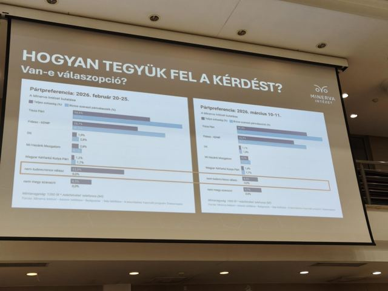
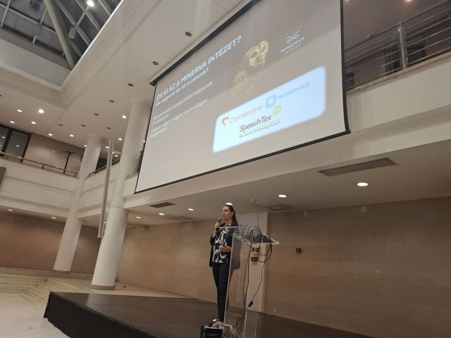
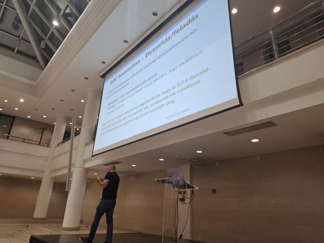
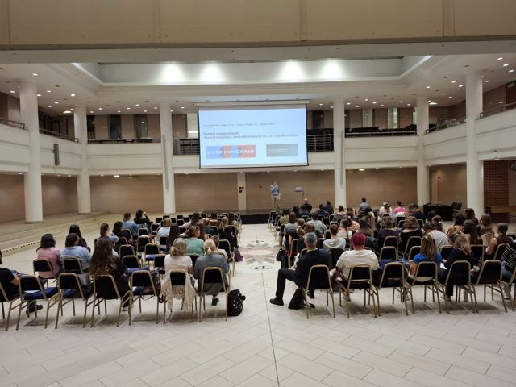

The event
ELTE Innofair is the flagship event that showcases the innovation and industry partnerships of Eötvös Loránd University. Our workshop set out to demonstrate, through concrete, practical projects, the gaps between language technology research, its industrial applications and everyday use, with the perspective of people with disabilities whose speech is impaired at the centre.
The workshop took place on the afternoon of 30 September 2026 in the Harmónia Hall of the ELTE Lágymányos Campus. Participants were welcomed by Ádám Miklósi, member of the Hungarian Academy of Sciences, university professor and head of institute.
My opening talk
I opened the workshop with a talk titled Language technology, speech recognition and AAC in practice. It set out what dysarthria is, how many people it affects, why it is hard for automatic speech recognition and where research is heading, and it closed with a scientometric map of the field.
What dysarthria is
Dysarthria is a motor speech disorder of neurological origin. It is not a language or cognitive problem but a disorder in carrying out the movements of speech: articulation becomes imprecise and slurred, the tempo slow, halting or irregular, and listeners find the speech much harder to understand. It commonly accompanies stroke, Parkinson's disease, cerebral palsy, and ALS and other neurodegenerative conditions.
How many people are affected
I estimated the number from the global prevalence of the underlying conditions and the share of patients who develop dysarthria. Together, tens of millions of people live with dysarthria worldwide.
| Underlying condition | People worldwide | Share with dysarthria |
|---|---|---|
| Parkinson's disease | 11.7 million | about 90% over the course of the disease |
| Stroke survivors | over 100 million | 24–50% |
| Cerebral palsy | 17 million | about 78%, persistent |
| ALS | 223,000 | about 70% over the course of the disease |
The sources use different methods, so the rates are not strictly comparable.
Why this is hard for speech recognition
- Imprecise articulation: speech sounds do not follow the usual patterns.
- Large individual variability: two people with dysarthria can sound very different from each other.
- Data scarcity: few public, annotated dysarthric recordings are available for training.
Commercial speech recognition systems typically reach a word error rate (WER) below 5% on typical speech. For dysarthric speech the error rate is many times higher: in the talk I illustrated it with about 45%, although the value varies widely with severity and corpus.
Where research is heading
- Benchmarks and databases: TORGO and UASpeech as a common yardstick.
- Self-supervised models: wav2vec 2.0 and HuBERT, which learn from little labelled data.
- LLM-based error correction: language models that correct the recognition output afterwards.
- Personalisation and synthetic data: speaker-specific, artificially augmented training data.
It is an active, fast-growing field, with many Interspeech, ICASSP and EUSIPCO papers in 2024–2026 and community initiatives such as the Speech Accessibility Project. Hungarian research is part of it: at EUSIPCO 2025, Péter Mihajlik, Éva Székely, Piroska Barta, Máté Soma Kádár, Gergely Dobsinszki and László Tóth (BME) improved dysarthric speech-to-text conversion through TTS-based personalisation.
A scientometric map of the field
For the scientometric part I queried the OpenAlex API for publications with dysarthria in the title or abstract. This retrieved 423 documents. In VOSviewer I built a keyword co-occurrence network with full counting over all 195 keywords.
| Keyword | Occurrences | Total link strength |
|---|---|---|
| dysarthria | 392 | 1,862 |
| medicine | 92 | 620 |
| audiology | 90 | 609 |
| psychology | 55 | 347 |
| computer science | 44 | 307 |
| intelligibility | 57 | 297 |
| speech recognition | 34 | 244 |
| physical medicine and rehabilitation | 33 | 241 |
| disease | 44 | 220 |
| speech therapy | 43 | 207 |
| artificial intelligence | 20 | 142 |

The map shows where the gap lies. The field is dominated by its clinical side: medicine, audiology, neurology and rehabilitation. The computational strand (speech recognition, feature extraction, deep learning, transformers) forms a separate cluster at the edge. It is tied to the core mainly through intelligibility and phonation. Artificial intelligence appears in only 20 of the 423 publications. That gap between clinical research and language technology is what the workshop set out to bridge.
Sources of the prevalence figures (APA 7)
- Arthur, K. C., Calvo, A., Price, T. R., Geiger, J. T., Chiò, A., & Traynor, B. J. (2016). Projected increase in amyotrophic lateral sclerosis from 2015 to 2040. Nature Communications, 7, 12408. https://doi.org/10.1038/ncomms12408
- Dorsey, E. R., Sherer, T., Okun, M. S., & Bloem, B. R. (2018). The emerging evidence of the Parkinson pandemic. Journal of Parkinson's Disease, 8(s1), S3–S8. https://doi.org/10.3233/JPD-181474
- Feigin, V. L., Brainin, M., Norrving, B., Martins, S. O., Pandian, J., Lindsay, P., Grupper, M. F., & Rautalin, I. (2025). World Stroke Organization: Global Stroke Fact Sheet 2025. International Journal of Stroke, 20(2), 132–144. https://doi.org/10.1177/17474930241308142
- Lin, L.-X., Yao, S.-Y., Chen, Q., Du, M.-Q., Kang, X.-H., Jiang, D.-Y., & Peng, Y. (2025). Stroke-associated dysarthria. Frontiers in Neurology, 16, Article 1629640. https://doi.org/10.3389/fneur.2025.1629640
- Luo, Y., Qiao, L., Li, M., Wen, X., Zhang, W., & Li, X. (2025). Global, regional, national epidemiology and trends of Parkinson's disease from 1990 to 2021: Findings from the Global Burden of Disease Study 2021. Frontiers in Aging Neuroscience, 16, Article 1498756. https://doi.org/10.3389/fnagi.2024.1498756
- McIntyre, S., Goldsmith, S., Webb, A., Ehlinger, V., Hollung, S. J., McConnell, K., Arnaud, C., Smithers-Sheedy, H., Oskoui, M., Khandaker, G., Himmelmann, K., & Kerr, C. (2022). Global prevalence of cerebral palsy: A systematic analysis. Developmental Medicine & Child Neurology, 64(12), 1494–1506. https://doi.org/10.1111/dmcn.15346
- Moya-Galé, G., & Levy, E. S. (2019). Parkinson's disease-associated dysarthria: Prevalence, impact and management strategies. Research and Reviews in Parkinsonism, 9, 9–16. https://doi.org/10.2147/JPRLS.S168090
- Parkinson's Foundation. (n.d.). Statistics. Retrieved September 29, 2026. https://parkinsons.org/disease/statistics
- Schölderle, T., Staiger, A., Lampe, R., Strecker, K., & Ziegler, W. (2016). Dysarthria in adults with cerebral palsy: Clinical presentation and impacts on communication. Journal of Speech, Language, and Hearing Research, 59(2), 216–229. https://doi.org/10.1044/2015_JSLHR-S-15-0086
- Target ALS. (n.d.). How ALS affects speech. Retrieved September 29, 2026. https://targetals.org/news/how-als-affects-speech/
- Vasta, R., Callegaro, S., Canosa, A., Manera, U., Grassano, M., Palumbo, F., Cabras, S., Matteoni, E., Di Pede, F., De Mattei, F., Tafaro, S., Thakur, N. M., Grosenick, R., De Marchi, F., Mazzini, L., Moglia, C., Calvo, A., Dave, K. D., & Chiò, A. (2025). Amyotrophic lateral sclerosis prevalence projection in 2040: A less rare disease. Annals of Clinical and Translational Neurology, 12(10), e70226. https://doi.org/10.1002/acn3.70226
I then introduced the speakers and explained how their talks built on each other.
The programme
- Tibor Fegyó and co-authors (Budapest University of Technology and Economics, Faculty of Electrical Engineering and Informatics, Department of Telecommunications and Artificial Intelligence; SpeechTex Ltd.): Speech recognition: a general overview and an industrial outlook. A broad picture of automatic speech recognition, followed by the challenges and results of recognising dysarthric, hard-to-understand speech.
- Zita Kovács-Ördög (data scientist, Clementine / Minerva Institute): The robot interviewer. Lessons from developing a robot interviewer and practical uses of AI-based data collection, including aspects related to the communication of people with disabilities.
- Zoltán Répási (hahodori): a live demonstration of Talkie, a browser-based AAC (augmentative and alternative communication) app, and the experience gained with it. A concrete, practical solution that makes everyday communication easier for people with disabilities and their families.
Registrations and audience
129 people registered for the workshop: 97 on the workshop's own registration page and 32 on the Innofair platform. Figure 1 shows how the registrations on our own page built up over time.
Part of the audience were current and future special needs teachers, who work directly with people who use AAC tools. They were joined by researchers, industry experts and other interested visitors. Participants asked a great many questions, ranging from the technical side of language technology through the use of the robot interviewer to the human side and personal involvement. After the official close many stayed on, and the workshop ended in informal conversations.
Why it matters
We wanted this programme to be part of Innofair because the event's aim, connecting research and industry, directly affects people's quality of life in our field. The perspective of people with disabilities rarely takes centre stage at technology events, yet this is where speech technology can bring some of its greatest social benefit.
The speakers took part as volunteers, without a fee. Our goal is for the workshop to start new collaborations between researchers, developers, civil initiatives and the special needs education profession.
Photos















